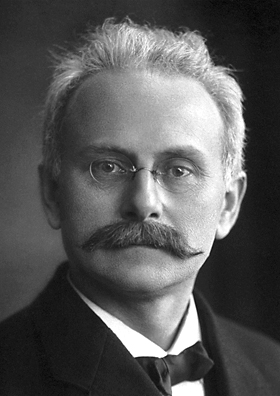

The Stark effect is the splitting and shifting of spectral lines when an atom or molecule is placed in an external electric field. It is the electric-field counterpart of the Zeeman effect, which involves magnetic fields. Both effects break the degeneracy of atomic energy levels, but they arise from different interactions and follow different selection rules.

A. B. Lagrelius & Westphal, Stockholm
{kind=link}
An external electric field changes electron energy levels by mixing states that share the same principal quantum number n but have different orbital angular momentum. For hydrogen, a level with quantum number n splits into 2n − 1 sublevels, spread symmetrically about the original energy.
Linear and Quadratic Regimes
The effect comes in two forms. In the linear Stark effect, the energy shift is directly proportional to the field strength. This occurs in hydrogen for levels with n > 1, where degenerate states of opposite parity can mix to form hybrids with a permanent electric dipole. In the quadratic Stark effect, the shift scales as the square of the field. This applies to most other atoms and molecules, which lack a permanent dipole moment and respond to the field through their polarisability.
Discovery
In 1913, German physicist Johannes Stark observed the effect by firing canal rays (positive ions) through a strong electric field of about 100,000 V/cm. He saw hydrogen Balmer lines split into multiple polarised components. The Italian physicist Antonino Lo Surdo independently observed the same phenomenon, but Stark's name became standard. In 1916, Paul Epstein and Karl Schwarzschild independently explained the splitting using the Bohr-Sommerfeld quantum theory, and this was considered one of the early triumphs of quantum mechanics. Stark received the Nobel Prize in Physics in 1919.
Stark Broadening in Astrophysics
Stellar atmospheres are hot, ionised plasmas and good electrical conductors, so they cannot sustain the steady electric fields needed for classical Stark splitting. Instead, passing ions and electrons create brief, random micro-electric fields that broaden spectral lines rather than cleanly splitting them. This Stark broadening is proportional to the local electron and ion density, making it a powerful diagnostic tool. Broader hydrogen Balmer lines indicate denser, higher-gravity photospheres, which is a key criterion for separating main-sequence stars from supergiants in the MK spectral classification system. In DA white dwarfs, Stark-broadened Balmer line profiles are the primary way to measure surface gravity and effective temperature.